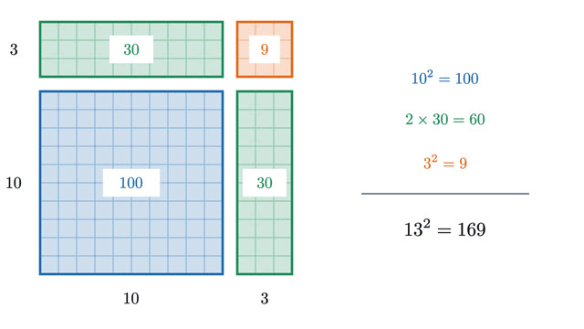
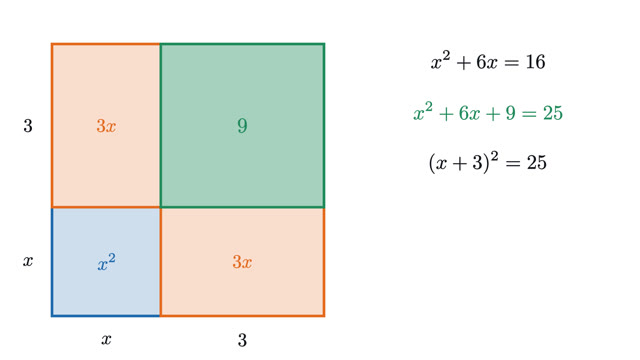
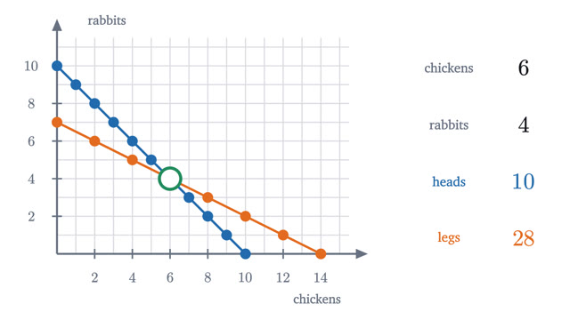

Algebra
Why the rules you were handed are true, drawn as lengths and areas.
Start with lesson 1-
1
Why is a negative times a negative positive?Multiplying by a negative number flips the number line about zero, and two flips cancel. We see it, then prove it from the distributive law.

-
2
The distributive law as a picture: FOIL and (a+b)²Cutting a rectangle into pieces explains FOIL, why (a+b)² has a middle term 2ab, and why (a+b)(a−b) = a² − b². Each identity is then proved.

-
3
Completing the square and the quadratic formulaSolve x² + 6x = 16 by rearranging a square and a rectangle into a bigger square with one corner missing, then turn that picture into the quadratic formula.

-
4
What slope means, and why y = mx + b is a lineA phone bill that grows by the same amount per gigabyte plots as a straight line. Similar triangles explain why, and give slope and y = mx + b their meaning.

-
5
Solving two equations at once: where lines meetTen heads and 28 legs: how many chickens and rabbits? Each clue is a line of possibilities, and elimination pivots a line about the point where they cross.

-
6
Why x⁰ = 1, and negative and fractional exponentsPowers of 2 halve as the exponent drops, and one rule, add exponents when you multiply, forces 2⁰ = 1, 2⁻¹ = 1/2 and 2^(1/2) = √2.

-
7
Absolute value is distance: solving |x − a| < rRead |x − 3| < 2 as "x is within 2 of 3" and the answer, 1 < x < 5, can be seen on a number line. Also why multiplying by a negative flips an inequality.